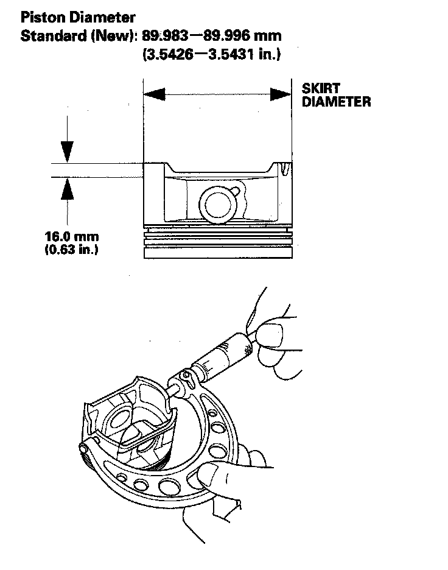
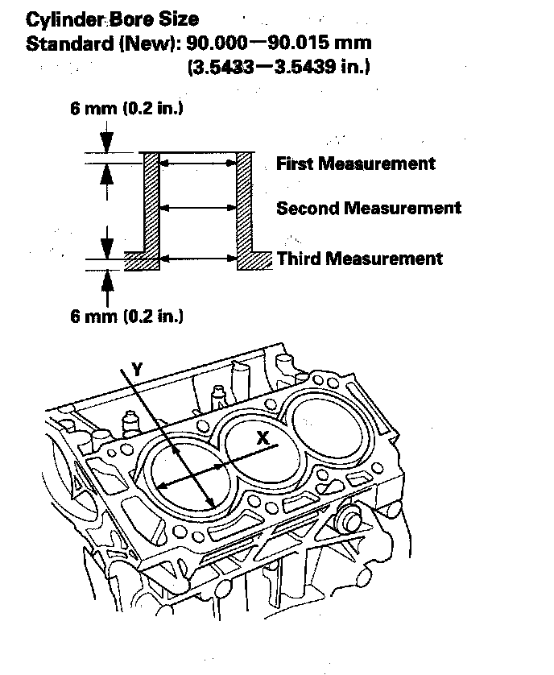
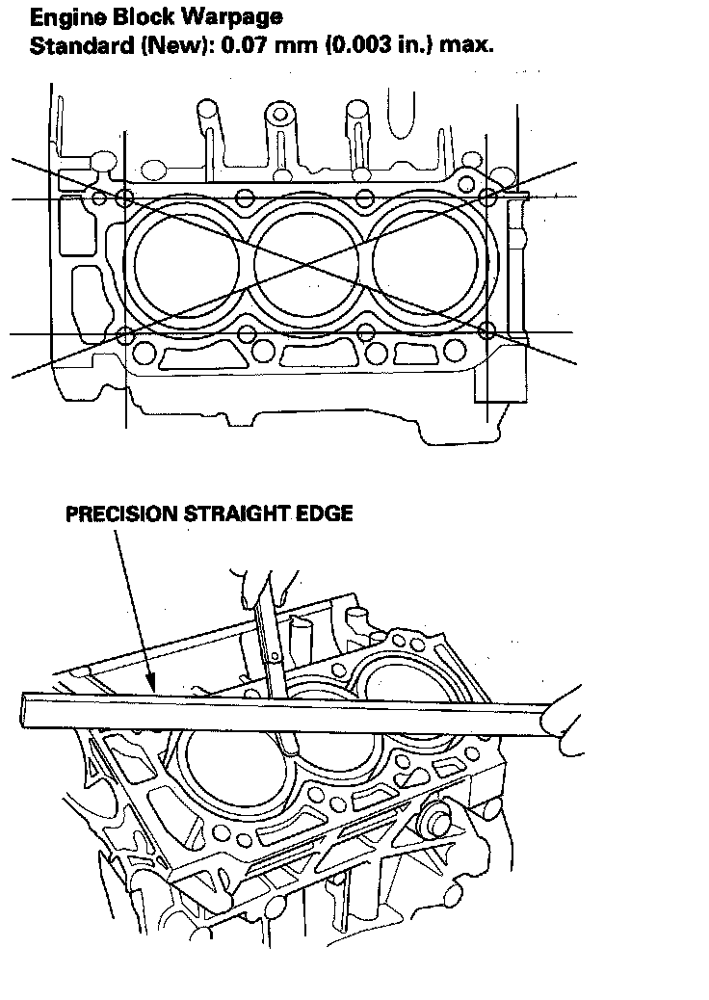
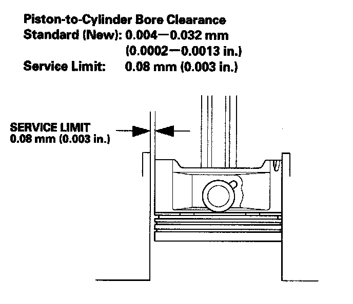

Piston: Testing and Inspection
Block and Piston Inspection1. Remove the piston from the engine block.
2. Check the piston for distortion or cracks.
3. Measure the piston diameter at a point 16.0 mm (0.63 in.) from the bottom of the skirt.

4. Measure wear and taper in direction X and Y at three levels in each cylinder as shown.

5. Check the top of the engine block for warpage. Measure along the edges and across the center as shown.

6. Calculate the difference between cylinder bore diameter and piston diameter. If the clearance is near or exceeds the service limit, inspect the piston and cylinder bore for excessive wear.
